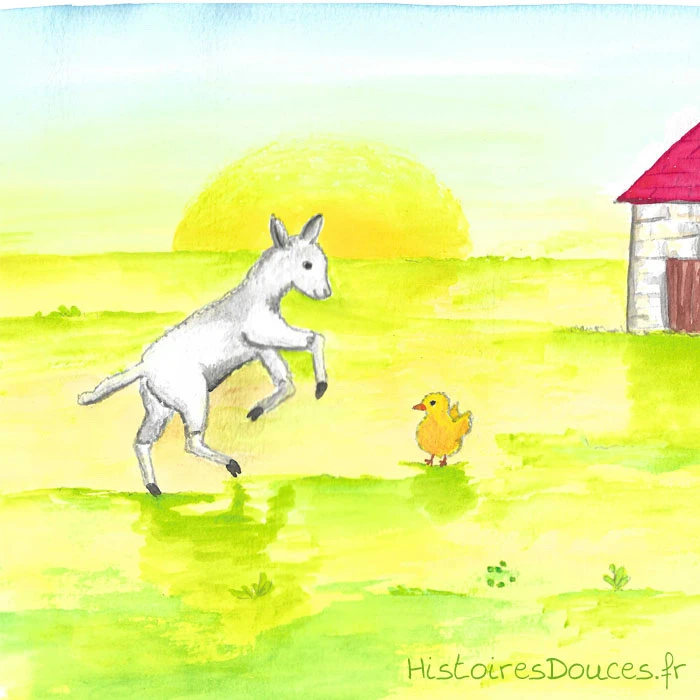

I) Bienvenue sur Histoires Douces !
Ici vous trouverez des histoires uniques, courtes et de tous types, en version texte et en fichier audio, pour lire ou faire écouter à vos petits. Bienveillance, respect, entraide, amour… des autres et de la nature, sont mes lignes de conduites.Ces histoires sont inventées, écrites, illustrées par moi-même : n'hésitez pas à me faire un petit retour sur ce que vous avez aimé, ce qui vous a moins plu, ainsi que sur les réactions de vos enfants !Si vous aimez ces histoires que je mets à disposition gratuitement, vous pouvez si vous le souhaitez, me faire un petit don facilement. Cela m’encouragera et m’aidera à payer l’hébergement du site, le matériel de dessin…
a) ConnaÎtre l'oiseau
L'oiseau vint dire à la poule : « Poule, tu as des ailes, pourquoi ne peux-tu pas prendre ton envol comme je le fais ?
— Parce que je n'en suis pas capable », répondit la poule. L'oiseau reprit : « Pourquoi parler ainsi ? Tu as des pattes, des ailes comme les miennes et tout ce qui est dans mon corps est aussi dans le tien. »
Lorsque la poule l'entendit, vexée, elle se fâcha et ne voulut plus écouter les paroles de l'oiseau : « Va-t'en, dit-elle, coucher dans le désert, laisse-moi dormir dans la maison ; je n'apprécie pas le langage que tu m'as tenu.
— Puisque tu ne veux pas entendre mes paroles, continua l'oiseau, demain les gens te prendront, te tueront et mangeront ta chair. Tu n'as pas d'intelligence : alors que je viens t'apprendre la sagesse, tu me repousses ! Bientôt, lorsque tu verras les gens venir pour te tuer, peut-être alors m'écouteras-tu. » La poule répondit : « Va-t'en, je n'ai que faire de toi.
— Très bien », dit l'oiseau en partant se percher sur un arbre.

b)agneau de pâques
Petit Agneau est un coquin. Il aime bien taquiner son copain Petit Poussin ! Mais Petit poussin a une très bonne idée pour surprendre le petit agneau…. Se fera-t-il avoir ? Une histoire tendre et amusante sur le thème de Pâques.
